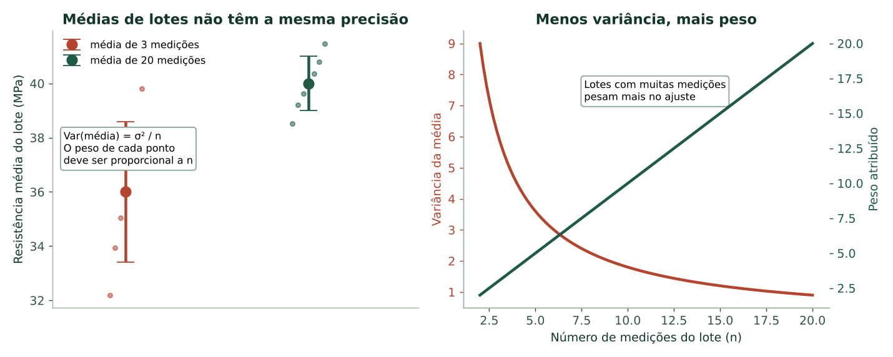
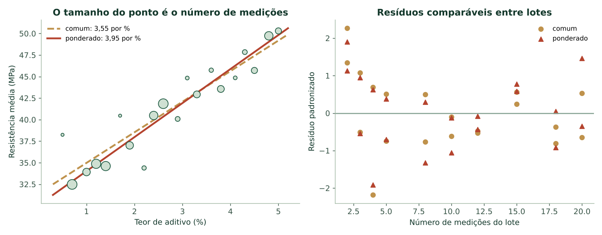

Mínimos quadrados ponderados (WLS)
Estima relações entre variáveis quando as observações não têm a mesma precisão, atribuindo a cada uma um peso.
Comece por aqui
A regressão linear trata todas as observações como igualmente confiáveis. Nem sempre elas são. Uma média calculada a partir de 20 medições é muito mais precisa que outra obtida de apenas 2; um sensor pode ser mais errático em temperaturas altas; o erro de um instrumento pode crescer com a magnitude medida. Nesses casos, dar o mesmo peso a todos os pontos desperdiça informação. Os mínimos quadrados ponderados corrigem isso.
A formulação geral é de Alexander Aitken (1935), que mostrou que, quando se conhece a matriz de covariâncias dos erros, o estimador de mínimos quadrados generalizados é o de menor variância entre os lineares não viesados. Os mínimos quadrados ponderados são o caso em que essa matriz é diagonal.
O que é o método
Nos mínimos quadrados comuns, procura-se a reta que minimiza \(\sum (y_i-\hat y_i)^2\): cada resíduo contribui igualmente. Nos ponderados, minimiza-se \(\sum w_i (y_i-\hat y_i)^2\), de modo que um resíduo grande em uma observação de peso pequeno custa pouco. A regra é simples: o peso deve ser proporcional ao inverso da variância da observação.

| Situação | Peso adequado |
|---|---|
| A resposta é uma média de nᵢ medições | wᵢ = nᵢ |
| A variância de cada observação é conhecida (σᵢ²) | wᵢ = 1 / σᵢ² |
| A resposta é uma proporção baseada em nᵢ ensaios | wᵢ = nᵢ (ou use um GLM binomial) |
| A variância cresce com o preditor, de forma conhecida | wᵢ = 1 / xᵢ ou wᵢ = 1 / xᵢ², conforme o padrão observado |
| A variância é desconhecida | Estime-a em duas etapas (mínimos quadrados generalizados factíveis) ou use erros-padrão robustos |
Pressupostos e como verificá-los
| Pressuposto | Por que importa | Como verificar |
|---|---|---|
| Linearidade | Mesma exigência da regressão comum. | Resíduos ponderados contra valores ajustados. |
| Erros independentes | Os pesos corrigem a variância, não a dependência. | Delineamento do estudo. |
| Variância conhecida a menos de uma constante | É o que os pesos representam: σᵢ² = σ²/wᵢ. | Conhecimento do processo de medida; nunca invente pesos. |
| Normalidade dos erros ponderados | Validade dos testes t e F em amostras pequenas. | Q–Q dos resíduos padronizados ponderados. |
| Pesos corretos | Pesos errados podem ser piores que nenhum peso. | Verifique se os resíduos padronizados têm dispersão semelhante em todas as faixas de peso. |
| Pesos positivos e não aleatórios | Pesos estimados dos mesmos dados introduzem incerteza adicional. | Prefira pesos vindos do delineamento (nᵢ, variância conhecida). |
Hipóteses e estatística de teste
Em que:
- \(\mathbf W\)
- matriz diagonal com os pesos
- \(w_i\)
- peso da observação i, proporcional ao inverso de sua variância
- \(\sigma_i^2\)
- variância da observação i
- \(\hat\sigma^2\)
- variância residual na escala dos pesos; vale 1 quando \(w_i=1/\sigma_i^2\) exatamente
- \(n,\ p\)
- número de observações e de parâmetros
- \(\mathbf b\)
- vetor de coeficientes ponderados
Exemplo numérico, passo a passo
Suponha três lotes com o mesmo teor de aditivo e médias de resistência diferentes, obtidas de números diferentes de corpos de prova.
| Lote | n | Média observada | Peso (w = n) | w × média |
|---|---|---|---|---|
| 1 | 2 | 38,0 | 2 | 76,0 |
| 2 | 8 | 34,0 | 8 | 272,0 |
| 3 | 20 | 33,0 | 20 | 660,0 |
| Soma | 30 | — | 30 | 1008,0 |
Média simples: \((38+34+33)/3=35{,}00\).
Média ponderada: \(1008/30=33{,}60\) — bem mais próxima dos lotes medidos muitas vezes.
A média simples trata a média de 2 corpos de prova como igual à de 20. A ponderada reconhece que a primeira tem variância dez vezes maior e, por isso, merece dez vezes menos peso.
Propriedades
- Com todos os pesos iguais, as fórmulas se reduzem exatamente às dos mínimos quadrados comuns.
- Multiplicar todos os pesos por uma constante não altera as estimativas nem seus erros-padrão: só a escala de \(\hat\sigma^2\) muda. O que importa são os pesos relativos.
- Com pesos corretos, o estimador é não viesado e de variância mínima entre os lineares não viesados (teorema de Gauss–Markov generalizado).
- Com pesos incorretos, as estimativas continuam não viesadas, mas perdem eficiência e os erros-padrão ficam errados.
- É equivalente a ajustar mínimos quadrados comuns às variáveis transformadas \(\sqrt{w_i}\,y_i\) e \(\sqrt{w_i}\,\mathbf x_i\).
- Os resíduos a examinar são os ponderados, \(\sqrt{w_i}\,(y_i-\hat y_i)\); os brutos continuarão mostrando o padrão de funil.
Como interpretar os resultados
| Elemento | O que informa | Cuidado |
|---|---|---|
| Coeficientes | Mesmo sentido da regressão comum. | Diferenças grandes entre as duas versões indicam que os pontos imprecisos estavam distorcendo o ajuste. |
| Erros-padrão | Em geral menores que os da versão comum. | Só são confiáveis se os pesos estiverem certos. |
| R² ponderado | Ajuste na escala ponderada. | Não é comparável ao R² da versão comum. |
| Erro-padrão residual | Deve ficar próximo de 1 quando wᵢ = 1/σᵢ². | Valor muito diferente de 1 sugere pesos mal especificados. |
| Resíduos padronizados | Devem ter dispersão semelhante em todas as faixas de peso. | Se ainda houver funil, os pesos não resolveram o problema. |
Reporte a origem dos pesos, os coeficientes com intervalos de confiança e a comparação com o ajuste não ponderado.
Como executar no R e em Python
Onde executar o código em Python
Não é preciso instalar nada: o Google Colab é um computador na nuvem, gratuito, que executa Python pelo navegador e já traz as bibliotecas usadas aqui (numpy, scipy e matplotlib).
Não é preciso função especial: lm() aceita o argumento weights. A função pertence ao pacote stats, já instalado com o R. Para erros-padrão robustos sem usar pesos, os pacotes sandwich e lmtest oferecem vcovHC() e coeftest().
m_ols <- lm(resistencia ~ teor, data = dados) # sem pesos
m_wls <- lm(resistencia ~ teor, data = dados, weights = n) # ponderado
summary(m_wls)
O código Python desta ficha faz as contas passo a passo com numpy e scipy, para que cada resultado possa ser acompanhado. No dia a dia, a biblioteca statsmodels, também disponível no Google Colab, oferece esses modelos prontos.
Exemplo de aplicação
Contexto dos dados
Vinte lotes de um material foram produzidos com teores diferentes de aditivo. De cada lote foram ensaiados alguns corpos de prova, entre 2 e 20, e registrou-se apenas a resistência média do lote. Queremos estimar como a resistência varia com o teor, levando em conta que nem todas as médias têm a mesma precisão. Os dados são fictícios, criados para esta ficha.
Código em R
# Mínimos quadrados ponderados: exemplo completo ----
# Pacote: apenas o stats (já vem com o R).
# 1. Dados: 20 lotes de produção (dados fictícios)
dados <- data.frame(
teor = c(0.5, 0.7, 1.0, 1.2, 1.4, 1.7, 1.9, 2.2, 2.4, 2.6,
2.9, 3.1, 3.3, 3.6, 3.8, 4.1, 4.3, 4.5, 4.8, 5.0),
n = c(2, 20, 12, 18, 18, 2, 12, 4, 15, 20, 5, 3, 10, 4, 10, 3, 5, 8, 15, 8),
resistencia = c(38.24, 32.48, 33.92, 34.87, 34.61, 40.46, 37.01, 34.39, 40.48, 41.85,
40.08, 44.83, 42.93, 45.74, 43.56, 44.85, 47.84, 45.71, 49.73, 50.30))
# 2. Mínimos quadrados comuns: todos os lotes com o mesmo peso
m_ols <- lm(resistencia ~ teor, data = dados)
summary(m_ols); confint(m_ols)
# 3. Mínimos quadrados ponderados: peso proporcional ao número de medições
m_wls <- lm(resistencia ~ teor, data = dados, weights = n)
summary(m_wls); confint(m_wls)
# 4. Ganho de precisão na inclinação
c(ep_comum = summary(m_ols)$coefficients[2, 2],
ep_ponderado = summary(m_wls)$coefficients[2, 2])
# 5. Resíduos padronizados: só os ponderados são comparáveis entre lotes
par(mfrow = c(1, 2))
plot(dados$n, rstandard(m_ols), pch = 19, xlab = "n do lote", ylab = "Resíduo padronizado (comum)")
abline(h = 0, col = "red")
plot(dados$n, rstandard(m_wls), pch = 19, xlab = "n do lote", ylab = "Resíduo padronizado (ponderado)")
abline(h = 0, col = "red")
par(mfrow = c(1, 1))
# 6. Pesos vindos de uma variância conhecida: w = 1 / s²
m_var <- lm(resistencia ~ teor, data = dados, weights = 1 / (18 / n))
coef(m_var) # idêntico ao item 3: multiplicar os pesos por uma constante não muda nada
# 7. Quando a variância não é conhecida, estima-se em duas etapas (FGLS)
res2 <- residuals(m_ols)^2
aux <- lm(log(res2) ~ teor, data = dados) # modelo para a variância
m_fgls <- lm(resistencia ~ teor, data = dados, weights = 1 / exp(fitted(aux)))
coef(m_fgls)
# 8. Alternativa sem pesos: erros-padrão robustos à heterocedasticidade
# install.packages(c("sandwich", "lmtest"))
# lmtest::coeftest(m_ols, vcov = sandwich::vcovHC(m_ols, type = "HC3"))
# 9. Gráfico: as duas retas, com o tamanho do ponto proporcional a n
plot(resistencia ~ teor, data = dados, pch = 19, cex = sqrt(dados$n) / 2,
xlab = "Teor de aditivo (%)", ylab = "Resistência média (MPa)")
abline(m_ols, lty = 2); abline(m_wls, col = "red", lwd = 2)
legend("topleft", c("comum", "ponderado"), lty = c(2, 1), col = c("black", "red"), bty = "n")
A mesma análise em Python, com os resultados
Cole o código em um notebook do Google Colab ↗ e execute com Shift+Enter. Os valores abaixo são a saída desse código.
# Bibliotecas: numpy, scipy e matplotlib (já instaladas no Google Colab)
import numpy as np
from scipy import stats
import matplotlib.pyplot as plt
# Dados: 20 lotes de produção (dados fictícios).
# teor = teor de aditivo (%) | n = número de corpos de prova medidos no lote
# resistencia = resistência média do lote (MPa)
teor = np.array([0.5, 0.7, 1.0, 1.2, 1.4, 1.7, 1.9, 2.2, 2.4, 2.6,
2.9, 3.1, 3.3, 3.6, 3.8, 4.1, 4.3, 4.5, 4.8, 5.0])
n = np.array([2, 20, 12, 18, 18, 2, 12, 4, 15, 20, 5, 3, 10, 4, 10, 3, 5, 8, 15, 8.])
resistencia = np.array([38.24, 32.48, 33.92, 34.87, 34.61, 40.46, 37.01, 34.39, 40.48, 41.85,
40.08, 44.83, 42.93, 45.74, 43.56, 44.85, 47.84, 45.71, 49.73, 50.30])
N = len(teor)
def mqp(X, y, w, nomes):
"""Mínimos quadrados ponderados. Com w = 1 para todos, equivale aos mínimos quadrados comuns."""
XtWX = X.T @ (X * w[:, None])
b = np.linalg.solve(XtWX, X.T @ (w * y))
r = y - X @ b
s2 = np.sum(w * r**2) / (len(y) - X.shape[1]) # variância residual ponderada
cov = s2 * np.linalg.inv(XtWX); ep = np.sqrt(np.diag(cov))
t = b / ep; p = 2 * stats.t.sf(np.abs(t), len(y) - X.shape[1])
tc = stats.t.ppf(0.975, len(y) - X.shape[1])
print(f"{'Termo':<12}{'Estimativa':>11}{'Erro-padrão':>13}{'t':>8}{'p-valor':>11}{'IC 95%':>22}")
for nm, bi, ei, ti, pi in zip(nomes, b, ep, t, p):
print(f"{nm:<12}{bi:>11.4f}{ei:>13.4f}{ti:>8.3f}{pi:>11.2e} [{bi-tc*ei:>7.4f}; {bi+tc*ei:>7.4f}]")
sqt = np.sum(w * (y - np.sum(w * y) / np.sum(w))**2)
print(f"R² ponderado = {1 - np.sum(w * r**2) / sqt:.4f} | erro-padrão residual = {np.sqrt(s2):.4f}")
return dict(b=b, ep=ep, res=r, s2=s2)
X = np.column_stack([np.ones(N), teor])
# 1. Por que ponderar: cada média vem de um número diferente de corpos de prova
print("Lotes com menos medições (n <= 4):", np.sum(n <= 4), "| com mais (n >= 15):", np.sum(n >= 15))
print(f"Variância de uma média de 2 medições é {20/2:.0f} vezes a de uma média de 20.")
# 2. Mínimos quadrados comuns (todos os lotes com o mesmo peso)
print("\nMínimos quadrados comuns:")
m_ols = mqp(X, resistencia, np.ones(N), ["(Intercepto)", "teor"])
# 3. Mínimos quadrados ponderados (peso = número de medições do lote)
print("\nMínimos quadrados ponderados (peso = n):")
m_wls = mqp(X, resistencia, n, ["(Intercepto)", "teor"])
# 4. Ganho de precisão
print(f"\nErro-padrão da inclinação: comum = {m_ols['ep'][1]:.4f} | ponderado = {m_wls['ep'][1]:.4f}"
f" | redução de {100 * (1 - m_wls['ep'][1] / m_ols['ep'][1]):.1f}%")
print(f"Largura do IC da inclinação: {2*stats.t.ppf(0.975, N-2)*m_ols['ep'][1]:.4f} -> {2*stats.t.ppf(0.975, N-2)*m_wls['ep'][1]:.4f}")
# 5. Resíduos padronizados: só os ponderados têm variância comparável
r_ols = m_ols["res"] / np.sqrt(m_ols["s2"])
r_wls = m_wls["res"] * np.sqrt(n) / np.sqrt(m_wls["s2"])
print("\nDesvio-padrão dos resíduos padronizados, por tamanho de lote:")
for rot, sel in [("n <= 4 ", n <= 4), ("n >= 15", n >= 15)]:
print(f" {rot}: comum = {r_ols[sel].std(ddof=1):.3f} | ponderado = {r_wls[sel].std(ddof=1):.3f}")
# 6. Observações mais e menos influentes no ajuste comum
i = np.argsort(-np.abs(r_ols))[:3]
print("\nMaiores resíduos padronizados no ajuste comum (lote, n, resíduo):")
for k in i: print(f" lote {k+1:>2} | n = {int(n[k]):>2} | {r_ols[k]:>6.2f}")
# 7. Quando os pesos vêm da variância conhecida de cada média: w = 1 / s²
print("\nPesos iguais ao inverso da variância (s² = 18 / n):")
s2_lote = 18.0 / n
m_var = mqp(X, resistencia, 1 / s2_lote, ["(Intercepto)", "teor"])
print("Multiplicar todos os pesos por uma constante não muda as estimativas nem os erros-padrão;")
print("muda apenas a escala do erro-padrão residual, que agora deve ficar próximo de 1.")
# 8. Gráficos
fig, ax = plt.subplots(1, 2, figsize=(11, 4))
ax[0].scatter(teor, resistencia, s=10 * n, alpha=0.5)
grade = np.linspace(0.3, 5.2, 50)
ax[0].plot(grade, m_ols["b"][0] + m_ols["b"][1] * grade, "--", label="mínimos quadrados comuns")
ax[0].plot(grade, m_wls["b"][0] + m_wls["b"][1] * grade, color="red", label="ponderados")
ax[0].set_xlabel("Teor de aditivo (%)"); ax[0].set_ylabel("Resistência média (MPa)"); ax[0].legend()
ax[1].scatter(n, r_ols, label="comum"); ax[1].scatter(n, r_wls, marker="^", label="ponderado")
ax[1].axhline(0, color="red"); ax[1].set_xlabel("Número de medições do lote"); ax[1].set_ylabel("Resíduo padronizado"); ax[1].legend()
plt.show()
Resultados da execução
Lotes com menos medições (n <= 4): 6 | com mais (n >= 15): 6 Variância de uma média de 2 medições é 10 vezes a de uma média de 20. Mínimos quadrados comuns: Termo Estimativa Erro-padrão t p-valor IC 95% (Intercepto) 31.4293 1.1134 28.228 2.35e-16 [29.0902; 33.7685] teor 3.5508 0.3623 9.801 1.22e-08 [ 2.7896; 4.3119] R² ponderado = 0.8422 | erro-padrão residual = 2.2230 Mínimos quadrados ponderados (peso = n): Termo Estimativa Erro-padrão t p-valor IC 95% (Intercepto) 30.0752 0.6818 44.114 8.49e-20 [28.6429; 31.5075] teor 3.9494 0.2374 16.637 2.25e-12 [ 3.4506; 4.4481] R² ponderado = 0.9389 | erro-padrão residual = 4.5880 Erro-padrão da inclinação: comum = 0.3623 | ponderado = 0.2374 | redução de 34.5% Largura do IC da inclinação: 1.5223 -> 0.9975 Desvio-padrão dos resíduos padronizados, por tamanho de lote: n <= 4 : comum = 1.575 | ponderado = 1.367 n >= 15: comum = 0.604 | ponderado = 0.854 Maiores resíduos padronizados no ajuste comum (lote, n, resíduo): lote 1 | n = 2 | 2.27 lote 8 | n = 4 | -2.18 lote 6 | n = 2 | 1.35 Pesos iguais ao inverso da variância (s² = 18 / n): Termo Estimativa Erro-padrão t p-valor IC 95% (Intercepto) 30.0752 0.6818 44.114 8.49e-20 [28.6429; 31.5075] teor 3.9494 0.2374 16.637 2.25e-12 [ 3.4506; 4.4481] R² ponderado = 0.9389 | erro-padrão residual = 1.0814 Multiplicar todos os pesos por uma constante não muda as estimativas nem os erros-padrão; muda apenas a escala do erro-padrão residual, que agora deve ficar próximo de 1.

| Elemento | Mínimos quadrados comuns | Ponderados (w = n) |
|---|---|---|
| Intercepto (IC 95%) | 31,429 [29,090; 33,769] | 30,075 [28,643; 31,508] |
| Inclinação (IC 95%) | 3,551 [2,790; 4,312] | 3,949 [3,451; 4,448] |
| Erro-padrão da inclinação | 0,3623 | 0,2374 |
| Largura do IC da inclinação | 1,522 | 0,998 |
| R² | 0,842 | 0,939 (ponderado) |
| Faixa | Desvio-padrão (comum) | Desvio-padrão (ponderado) |
|---|---|---|
| n ≤ 4 | 1,575 | 1,367 |
| n ≥ 15 | 0,604 | 0,854 |
Leitura: a inclinação estimada passa de 3,55 para 3,95 MPa por ponto percentual de aditivo, e o erro-padrão cai 34,5%: o intervalo de confiança encurta de 1,52 para 1,00. Os três maiores resíduos do ajuste comum pertencem a lotes de apenas 2 ou 4 corpos de prova — exatamente os pontos que deveriam pesar menos. Na versão comum, os resíduos dos lotes grandes são sistematicamente menores (desvio-padrão de 0,60 contra 1,58 nos lotes pequenos), um sinal claro de que a variância não é constante. Depois de ponderar, as duas faixas ficam comparáveis.
A última parte do código mostra que usar \(w_i=1/\sigma_i^2\), com \(\sigma_i^2=18/n_i\), dá exatamente as mesmas estimativas: o que importa é a proporção entre os pesos, não sua escala. A diferença aparece no erro-padrão residual, que passa a ficar próximo de 1 — um teste útil de que os pesos foram bem escolhidos.
Erros comuns
| Erro | Como evitar |
|---|---|
| Inventar pesos sem justificativa | Pesos errados podem piorar o ajuste; use o delineamento. |
| Usar w = σᵢ em vez de w = 1/σᵢ² | O peso é o inverso da variância, não do desvio-padrão. |
| Examinar os resíduos brutos | Use os resíduos ponderados (rstandard() já faz isso no R). |
| Comparar o R² ponderado com o comum | São escalas diferentes. |
| Estimar os pesos dos mesmos dados e ignorar essa incerteza | Os erros-padrão ficam otimistas; considere bootstrap. |
| Usar pesos para corrigir dependência entre observações | Pesos tratam variância, não correlação; use GEE ou modelos mistos. |
| Confundir pesos de precisão com pesos amostrais | Pesos de pesquisa amostral exigem variância de desenho, não esta fórmula. |
Alternativas e fluxo de trabalho
| Procedimento | Quando preferir |
|---|---|
| Erros-padrão robustos à heterocedasticidade (HC0 a HC3) | A variância não é constante, mas não se conhece sua forma e o interesse está na inferência. |
| Transformação da resposta (log, raiz) | A variância cresce com a média de forma multiplicativa. |
| Modelos lineares generalizados | A variância é função da média (contagens, proporções). |
Mínimos quadrados generalizados (nlme::gls) | Erros correlacionados, além de heterocedásticos. |
| Regressão quantílica | Interesse em quantis ou presença de valores extremos. |
| GEE / modelos mistos | Observações agrupadas ou repetidas. |
- Identifique por que a variância difere entre observações.
- Defina os pesos a partir do delineamento, não dos resíduos.
- Ajuste as duas versões e compare estimativas e erros-padrão.
- Examine os resíduos ponderados.
- Se a variância residual ponderada ficar longe de 1, revise os pesos.
Referências desta ficha
- AITKEN, Alexander C. On least squares and linear combination of observations. Proceedings of the Royal Society of Edinburgh, v. 55, p. 42-48, 1935.
- MONTGOMERY, Douglas C.; PECK, Elizabeth A.; VINING, G. Geoffrey. Introduction to linear regression analysis. 6. ed. Hoboken: Wiley, 2021.
- FOX, John; WEISBERG, Sanford. An R companion to applied regression. 3. ed. Thousand Oaks: SAGE, 2019.
- CARROLL, Raymond J.; RUPPERT, David. Transformation and weighting in regression. London: Chapman & Hall, 1988.
- ZEILEIS, Achim. Econometric computing with HC and HAC covariance matrix estimators. Journal of Statistical Software, v. 11, n. 10, p. 1-17, 2004. (Pacote
sandwich.) - R CORE TEAM. R: a language and environment for statistical computing. Vienna: R Foundation for Statistical Computing, 2026. Disponível em: https://www.r-project.org/. (Função
lmcom o argumentoweights, pacotestats.) - POSIT TEAM. RStudio: integrated development environment for R. Boston: Posit Software, PBC. Disponível em: https://posit.co/download/rstudio-desktop/.
- VIRTANEN, Pauli et al. SciPy 1.0: fundamental algorithms for scientific computing in Python. Nature Methods, v. 17, p. 261-272, 2020. DOI: 10.1038/s41592-019-0686-2. (Funções do módulo
scipy.stats.) - HARRIS, Charles R. et al. Array programming with NumPy. Nature, v. 585, p. 357-362, 2020. DOI: 10.1038/s41586-020-2649-2.
- HUNTER, John D. Matplotlib: a 2D graphics environment. Computing in Science & Engineering, v. 9, n. 3, p. 90-95, 2007.
- GOOGLE. Google Colaboratory. Disponível em: https://colab.research.google.com/.
- Os dados do exemplo são fictícios e foram criados pelo autor. As figuras desta ficha foram elaboradas pelo autor.

Prof. Dr. Cássius Henrique Xavier Oliveira
Professor · ICTIN/UFLA · Estatística, Confiabilidade e Ciência de Dados.
Conheça minha trajetória e projetos →